User Guide for inno-alumni-portal
Welcome to the User Guide for the inno-alumni-portal. This guide provides comprehensive instructions and information on how users can effectively utilize the features and functionalities of the system.
Table of Contents
Introduction
Welcome to the User Guide for the inno-alumni-portal! Whether you're an alumni member eager to engage with your alma mater or an administrator tasked with managing the system, this guide is designed to help you navigate through the functionalities and features of the platform effectively.
Getting Started
Whether you're a user or an administrator, this User Guide aims to empower you with the knowledge and resources needed to make the most out of the inno-alumni-portal. Let's embark on this journey together and explore the exciting possibilities that await within the vibrant community of Innopolis University Alumni!
For users
As a user of the inno-alumni-portal, you have access to a range of features tailored to enhance your experience and connectivity with Innopolis University. From registering for elective courses to staying updated with university events, managing attendance, and submitting feedback, this guide will walk you through the process step-by-step.
Section overview
The system has pages such as:
Detailed information on each section is provided below.
Users login page
Authorisation and Authentication page. For authentication and authorisation, you can use several options:
- Register.
- Sign in if you already have an account.
- Sign in using the Innopolis University authentication system if you have a corporate account.

Overview
After successfully logging in to your account, you will be taken to the Overview section. In this section on the left side there is a menu to navigate between the sections. Also on this page are brief descriptions of the sections.
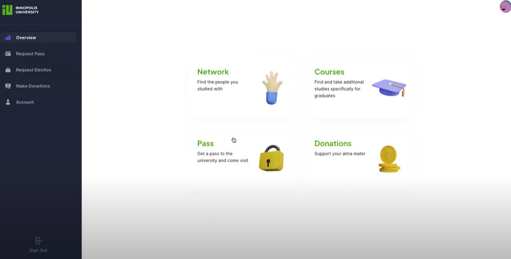
Request Pass
This page is designed to generate and send enquiries. You can fill in the necessary forms and send a request if you have a need. In the right part of the page there is background information on popular issues.
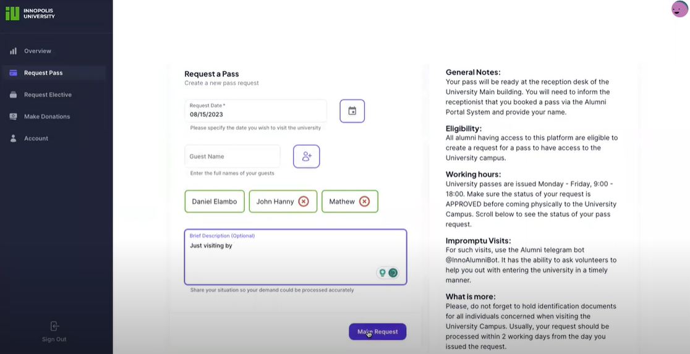
Once you have completed the form, your enquiry will appear in the History section. Here you can track the status of your enquiry and find out more details.
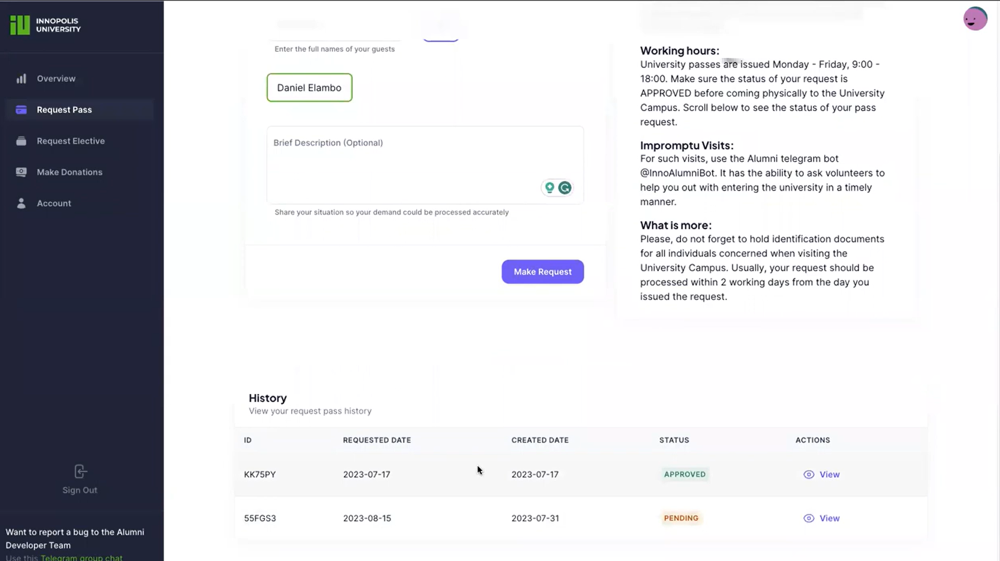
For even more detailed information you can click on an enquiry and see an enquiry card with detailed information about the enquiry.
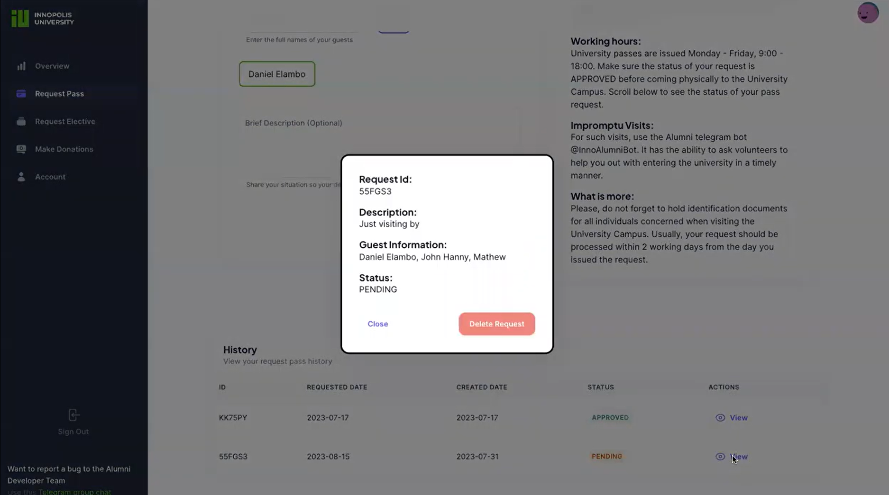
Request Electives
This page is designed to generate and send requests for elective courses. You can select the available electives and submit a course request.
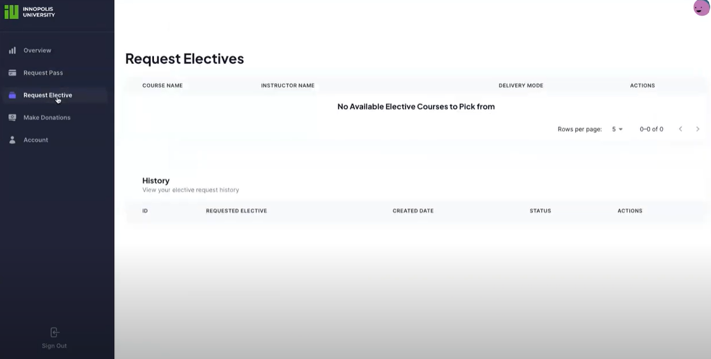
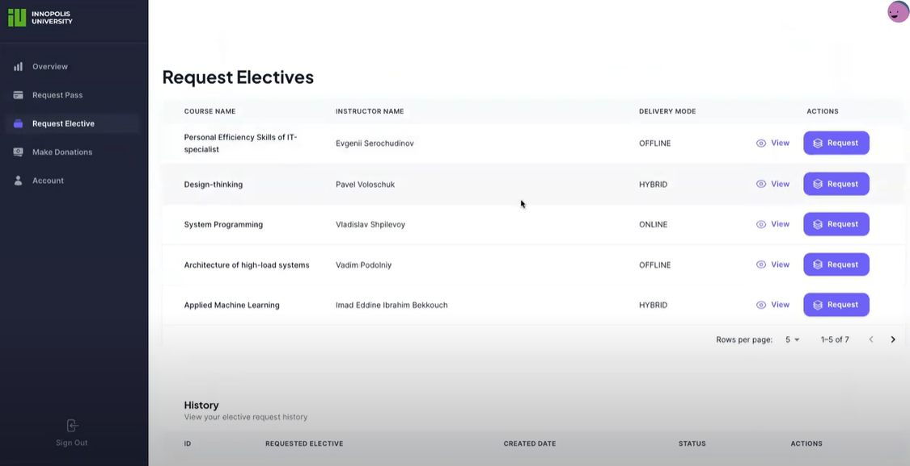
You can also track the history of requests at the bottom of the section and track the status of requests. Also, if you click on a request, you can read detailed information.
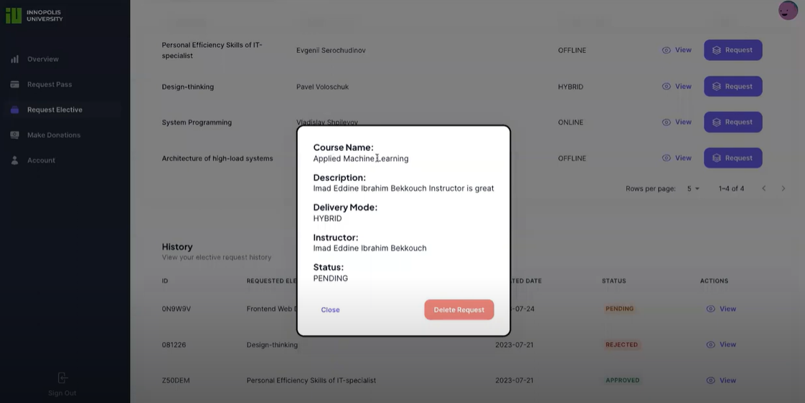
Make Donations
This section provides information about the possibility of donations. The main part of the section provides detailed information and motivation for action.
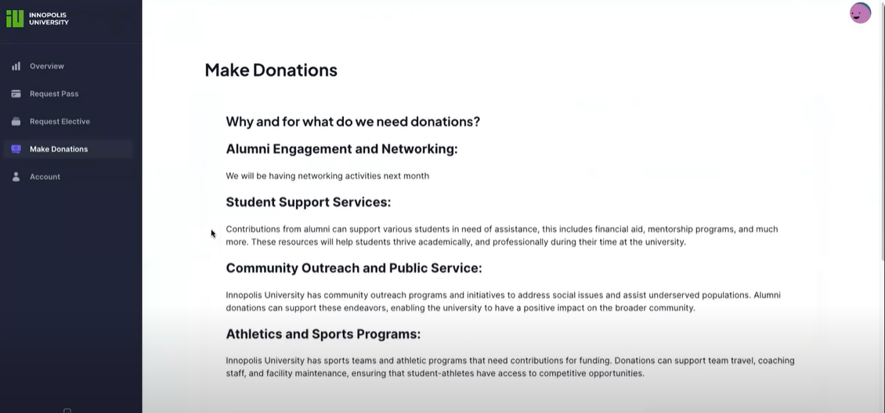
At the bottom of the section are the necessary details and donation forms.
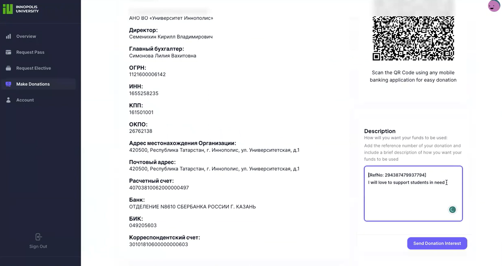
Account
This section provides detailed information about the account you are using. You can also update the account data here.
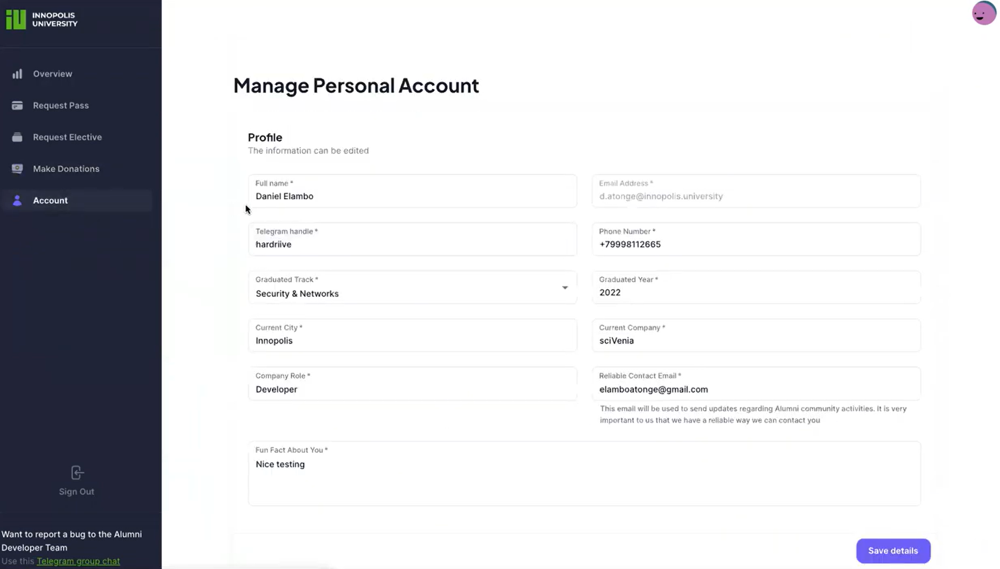
For administrators
As an administrator responsible for overseeing the operations and functionalities of the inno-alumni-portal, this guide provides valuable insights into managing user data, processing pass requests, overseeing elective course registrations, and addressing user feedback. You'll find detailed instructions and best practices to streamline administrative tasks and ensure a seamless experience for all users.
Section overview
The system has pages such as:
Detailed information on each section is provided below.
Admins login page
System login page. You need to have an admin account to log in to authenticate and authorise.

Overview
After authentication and authorisation, you are taken to the main page. Here you can see the data of the last logged in users.
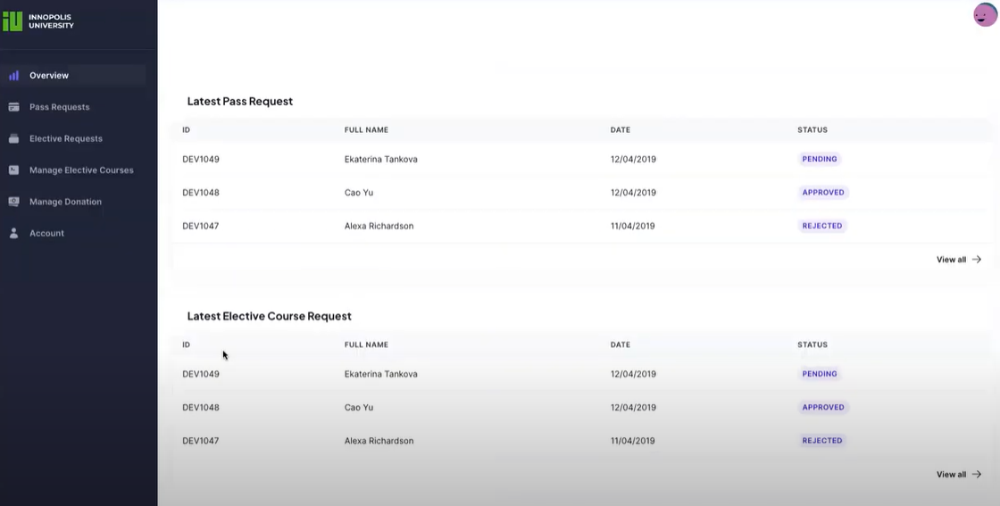
Pass Requests
This page contains requests from users. Here you can see the dates and statuses of the requests.
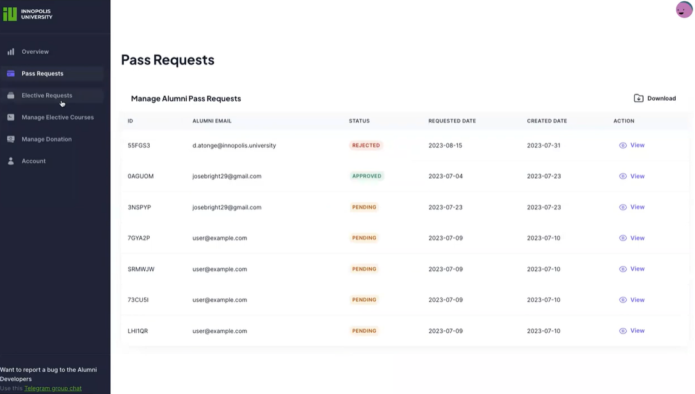
You can click on the required enquiry for more information and to complete the enquiry response form.
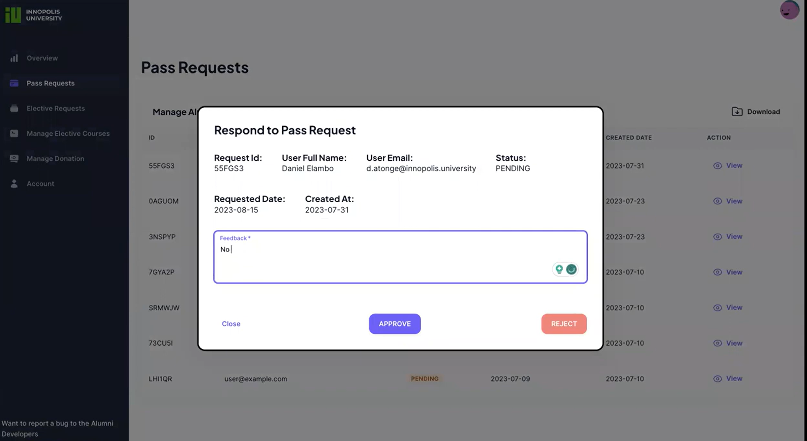
Manage Elective Courses
This section is similar to the previous one, but belongs to the elective courses section. Here you can familiarise yourself with user requests.
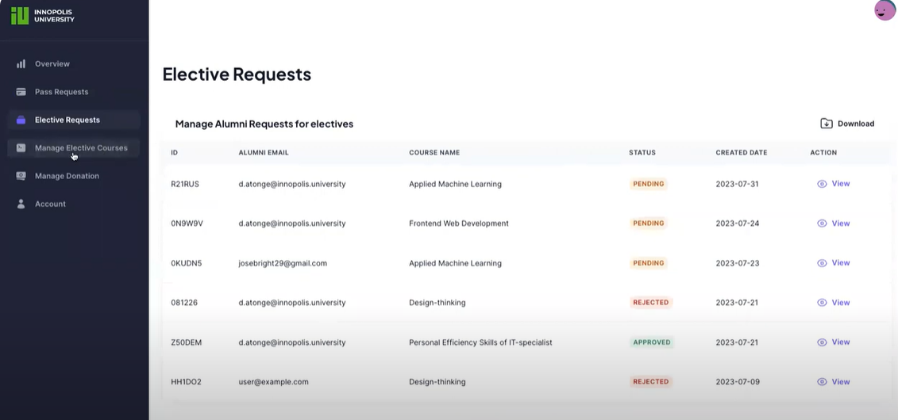
To respond to a request, you need to fill in the response form, which can be opened by clicking on the request.
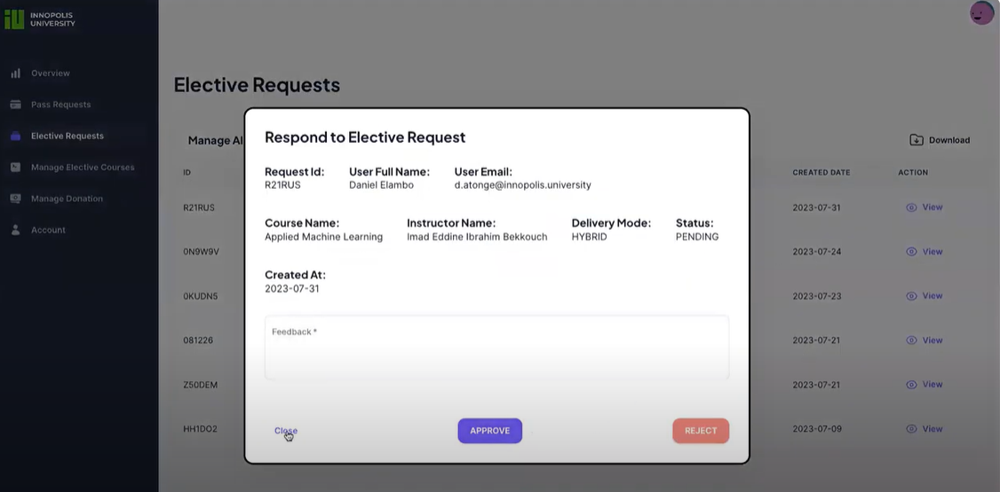
Manage Donation
In this section we can update the information about donations, as well as review the donations that have come in.
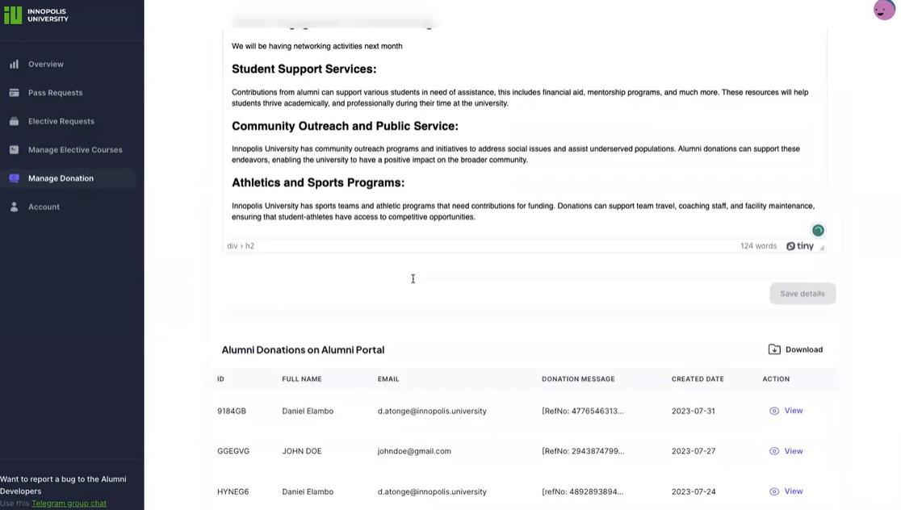
By clicking on a specific donation, we can get more detailed information about the selected donation.
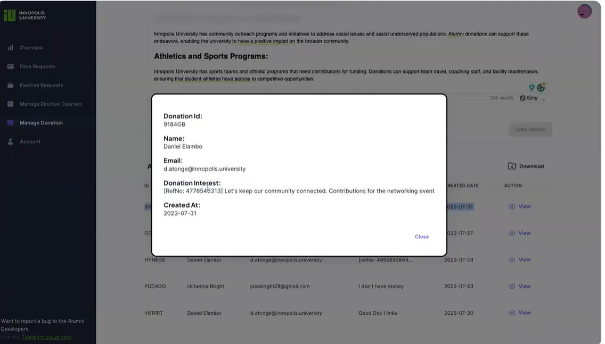
Account
This section provides information about the users of the system. You can also add new users with the required access by clicking the add button in the upper right corner of the screen.
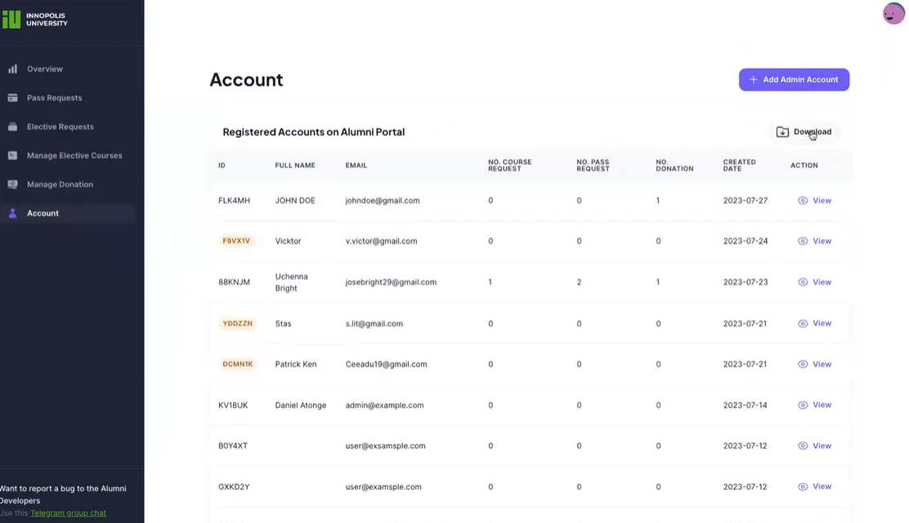